Red Hat® Ansible® Tower helps you scale IT automation, manage complex deployments and speed productivity. Centralize and control your IT infrastructure with a visual dashboard, role-based access control, job scheduling and graphical inventory management.
What is Ansible Tower
How Ansible Tower Works
Installing Ansible Tower
Key Features
What is Ansible Tower?
Ansible Tower is an enterprise framework for controlling, securing and managing your Ansible automation – with a UI and RESTful API
Role-based access control keeps environments secure, and teams efficient
Non-privileged users can safely deploy entire applications with push-button deployment access
All Ansible automations are centrally logged, ensuring complete auditability and compliance
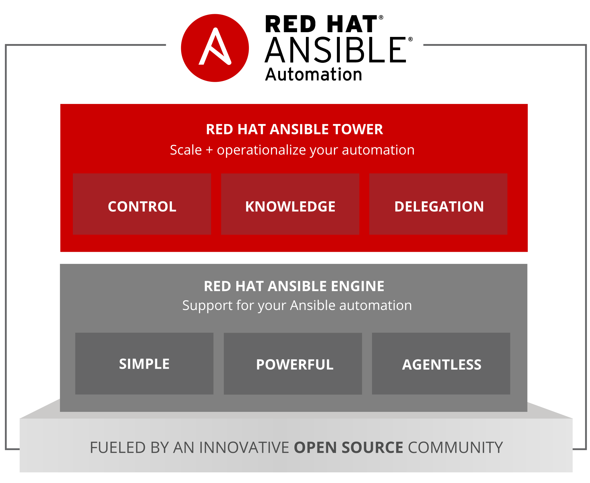
Platform Overview
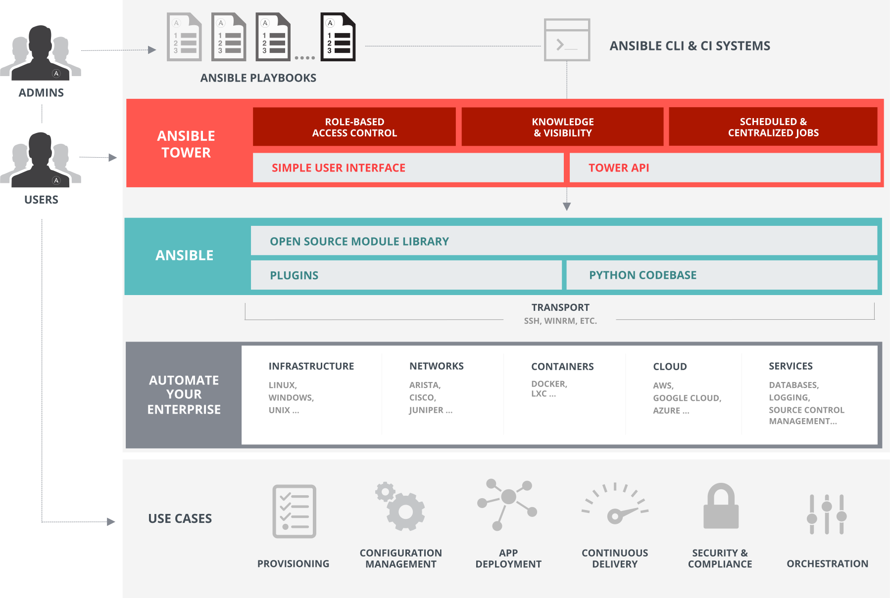
Installing Ansible Tower
# the most common and preferred way of
# installation for RHEL (Preferred) or Ubuntu
$ wget https://bit.ly/ansibletower
# bundled installer can be downloaded for
# RHEL (and select derivatives) at
$ wget https://bit.ly/ansibletowerbundle
# looking for a specific version? navigate to http://releases.ansible.com/ansible-tower
# to see all the versions available for download
Server Requirements
Red Hat Enterprise Linux (RHEL) 7 (and select derivatives), Ubuntu 14.04 64-bit, and Ubuntu 16.04 LTS 64-bit support required (kernel and runtime).
A currently supported version of Mozilla Firefox or Google Chrome.
2 GB RAM minimum (4+ GB RAM highly recommended)
20 GB of dedicated hard disk space
Demo Time: Installing Ansible Tower
Workshop: Installing Ansible Tower
Key Features of Ansible Tower
Dashboard and User Interface
User Base -- Organizations, Teams & Users
Credentials
Inventories
Projects
Job Templates & Jobs
Role Based Access Control (RBAC)
Dashboard and User Interface
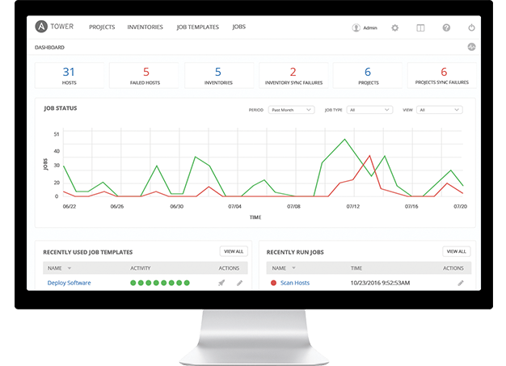
User Base
A user is an account to access Ansible Tower and its services given the permissions granted to it.
An organization is a logical collection of users, teams, projects, inventories and more. All entities belong to an organization with the exception of users.
Teams provide a means to implement role-based access control schemes and delegate responsibilities across organizations.
Credentials
Credentials are utilized by Ansible Tower for authentication with various external resources:
Connecting to remote machines to run jobs
Syncing with inventory sources
Importing project content from version control systems
Connecting to and managing networking devices
Centralized management of various credentials allows end users to leverage a secret without ever exposing that secret to them.
Inventory
Inventory is a collection of hosts (nodes) with associated data and groupings that Ansible Tower can connect to and manage.
Hosts (nodes)
Groups
Inventory-specific data (variables)
Static or dynamic sources
Projects
A Project is a logical collection of Ansible Playbooks, represented in Ansible Tower.
You can manage Playbooks and Playbook directories by placing them in a source code management system supported by Ansible Tower, including Git, Subversion, and Mercurial.
Job Templates
A job template is a definition and set of parameters for running an Ansible Playbook.
Job templates are useful to execute the same job many times and encourage the reuse of Ansible Playbook content and collaboration between teams.
Jobs
A job is an instance of Ansible Tower launching an Ansible Playbook against an inventory of hosts.
Job results can be easily viewed
View the standard out for a more in-depth look
Role Based Access Control (RBAC)
Role-Based Access Controls (RBAC) are built into Ansible Tower and allow administrators to delegate access to server inventories, organizations, and more. These controls allow Ansible Tower to help you increase security and streamline management of your Ansible automation.
Role Based Access Control (RBAC)
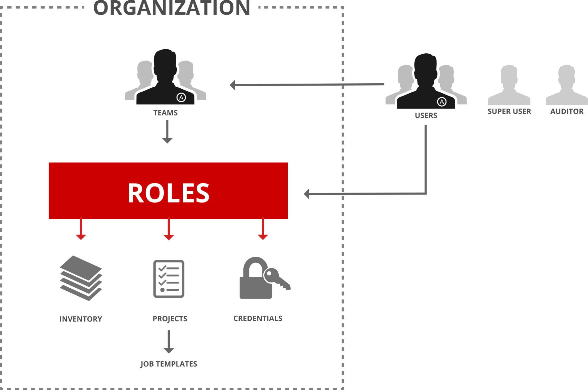
Demo Time: Ansible Tower Basic Setup & Job Run
Workshop: Ansible Tower Basic Setup & Your First Job Run
Dynamic Inventory in Ansible Tower
Dynamic inventory is a script that queries a service, like a cloud provider API or a management application. This data is formatted in an Ansible-specific JSON data structure and is used in lieu of static inventory files.
Groups are generated based on host metadata
Single source of truth saves time, avoids duplication and reduces human error
Dynamic and static inventory sources can be used together
Demo: Ansible Tower Dynamic Inventory
More with Ansible Tower
Job Status Updates
Activity Stream
Integrated Notifications
Schedule Jobs
Manage and Track Your Inventory
Self Service IT (User Surveys)
Remote Command Execution
External Logging
Multi-Playbook Workflows
Job Status Update
Heads-up NOC-style automation dashboard displays everything going on in your Ansible environment.
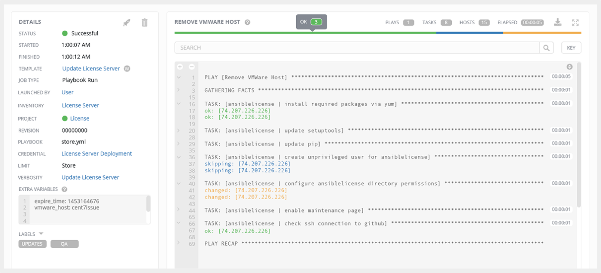
Activity Stream
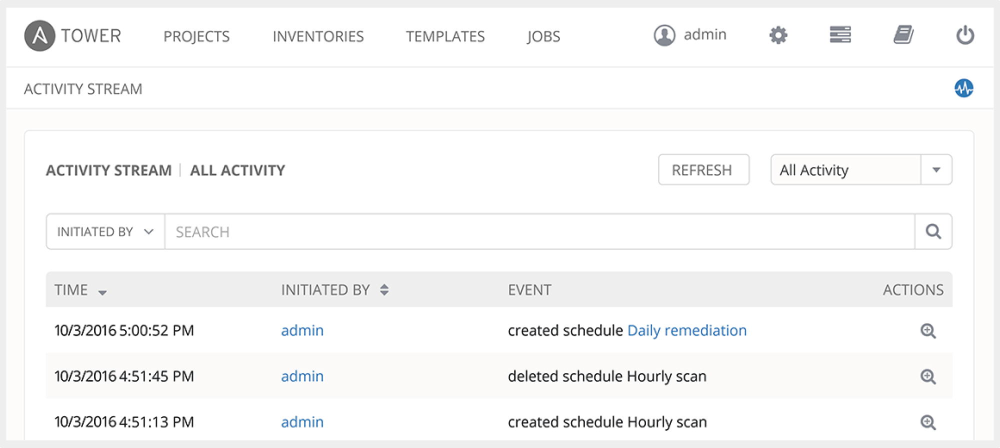
Securely stores every Job that runs, and enables you to view them later, or export details through Ansible Tower’s API.
Integrated Notifications
Stay informed of your automation status via integrated notifications. Connect Slack, Hipchat, SMS, email and more.
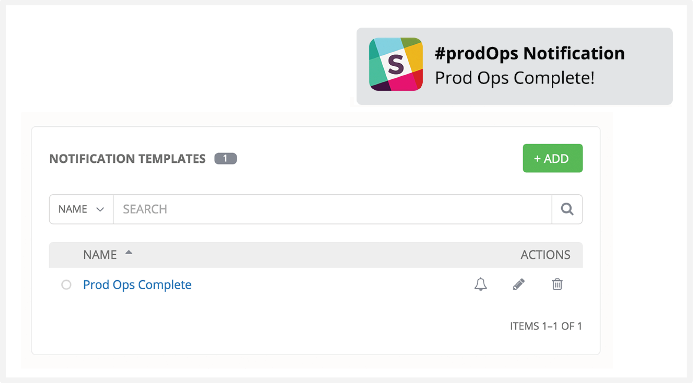
Schedule Jobs
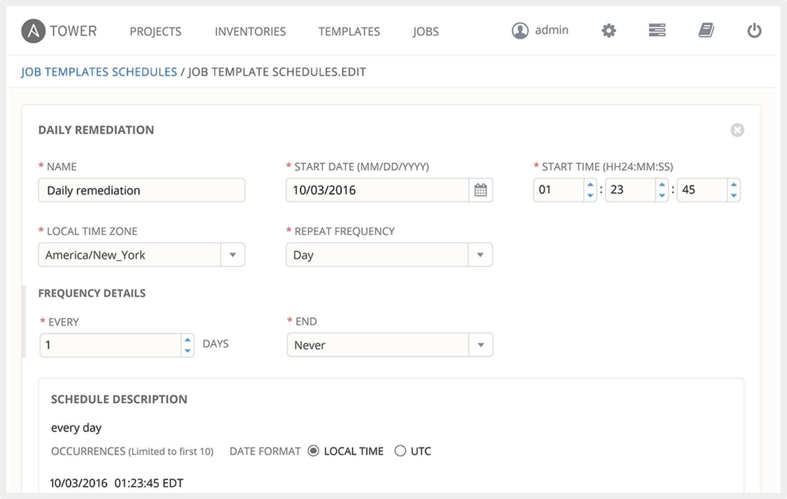
Enables you to any Job now, later, or forever.
Manage and Track Your Inventory
Ansible Tower’s inventory syncing and provisioning callbacks allow nodes to request configuration on demand, enabling auto-scaling.
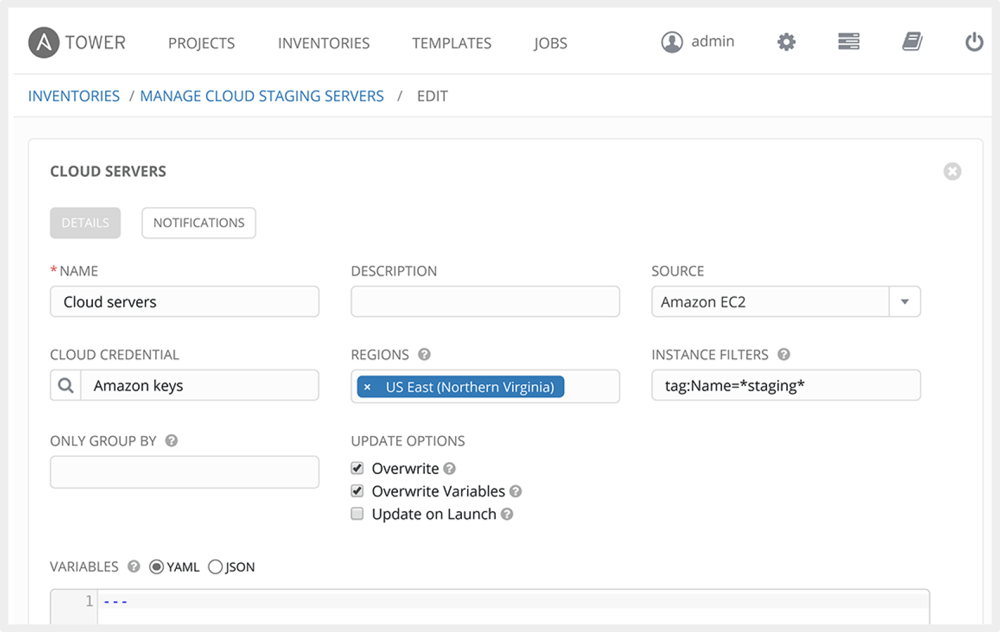
Self Service IT
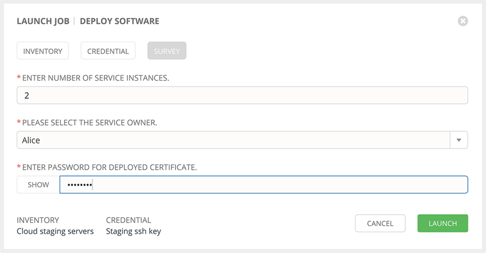
Ansible Tower lets you launch Playbooks with just a single click. It can prompt you for variables, let you choose from available secure credentials and monitor the resulting deployments.
Remote Command Execution
Run simple tasks on any hosts with Ansible Tower's remote command execution. Add users or groups, reset passwords, restart a malfunctioning service or patch a critical security issue, quickly.
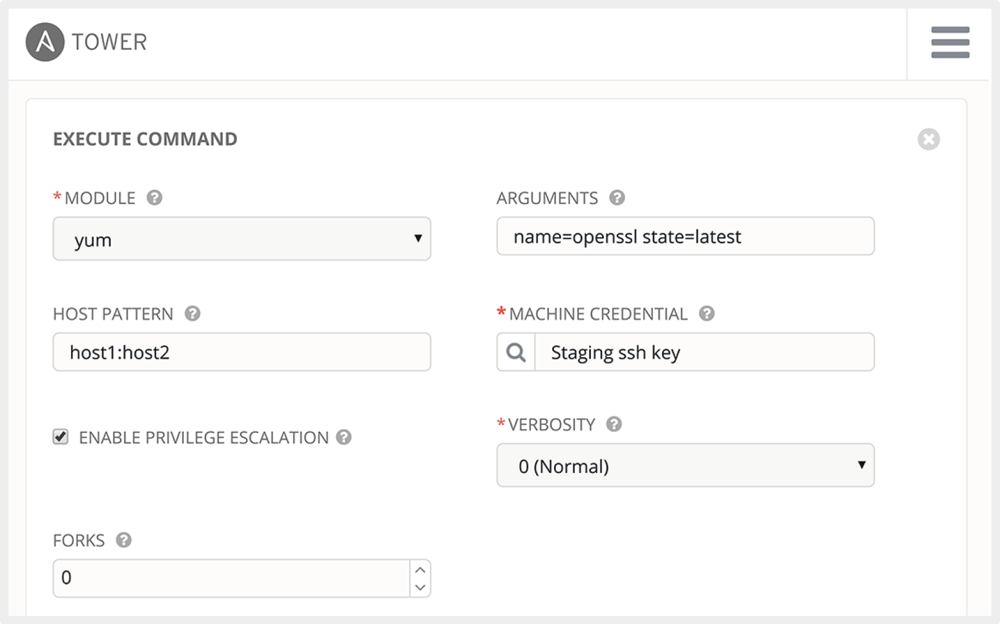
External Logging
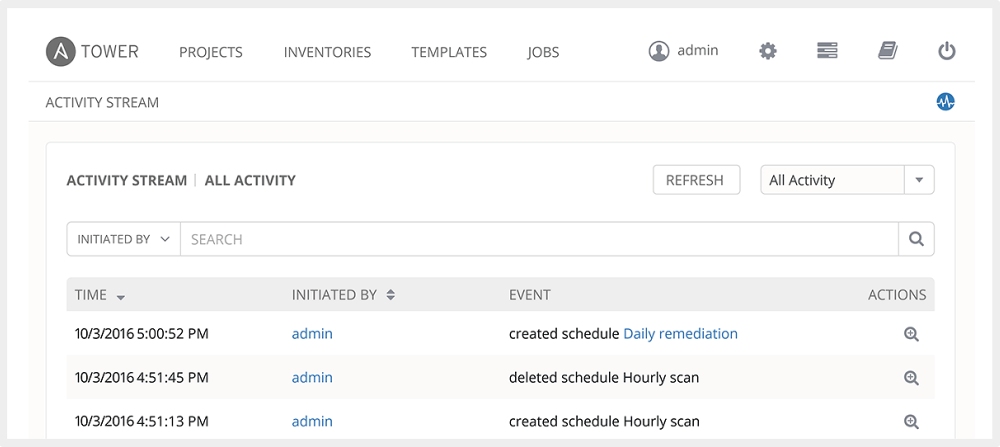
Connect Ansible Tower to your external logging and analytics provider to perform analysis of automation and event correlation across your entire environment.
Multi-Playbook Workflows
Ansible Tower’s multi-Playbook workflows chains any number of Playbooks together to create a single workflow. Different Jobs can be run depending on success or failure of the prior Playbook.
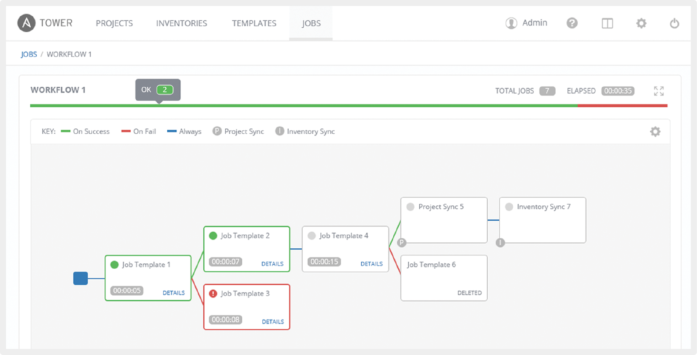
Next Steps
It’s easy to get started ansible.com/get-started
Try Ansible Tower for free: ansible.com/tower-trial
Would you like to learn a lot more? redhat.com/en/services/training/do409-automation-ansible-ii-ansible-tower